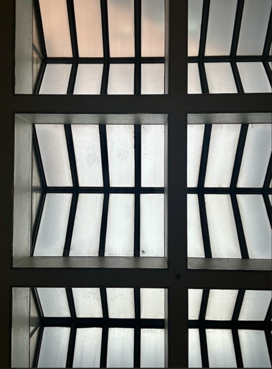
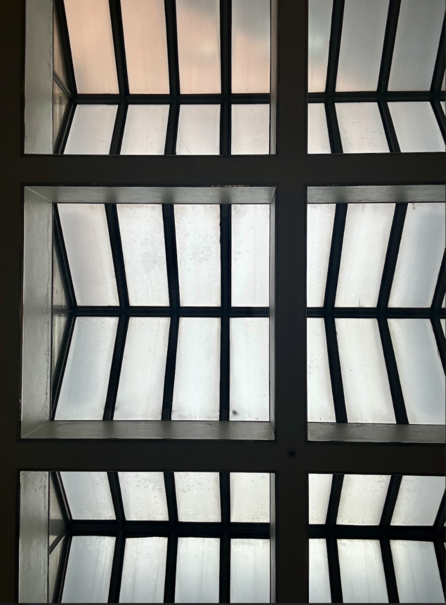
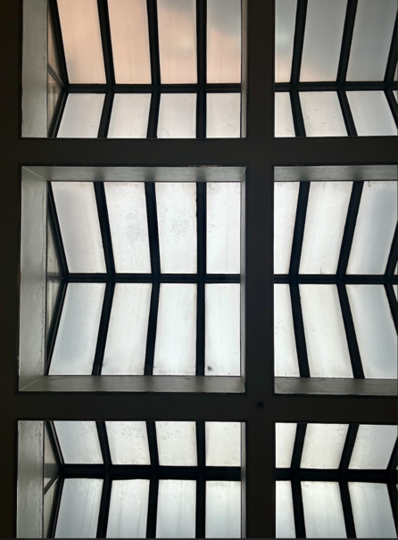

질감은 사물 표면의 특성을 구분하는 요소로서 시각적 질감과 촉각적 질감을 모두 포함하는 개념이다.
눈으로 사물의 표면을 인지하는 과정에서 빛은 사물의 표면을 거쳐 우리눈에 들어오는데
직진, 반사, 굴절의 현상이 일어나게되며 매질의 속성에 따라 확산체, 반사체, 투명체로 구분할 수 있다.
사물마다 빛의 반사나 투과 정도에 따라 물체의 겉면 광택과 투명한 정도는 다르게 보이는데 이를 시각적 질감이라고 한다.
촉각적 질감은 물체와의 직접적인 접촉으로 인해 표면에서 느껴지는 '거칠다, 딱딱하다, 부드럽다' 등의 감각으로 물체의 속성과 상태를 파악하는 것을 말한다.
